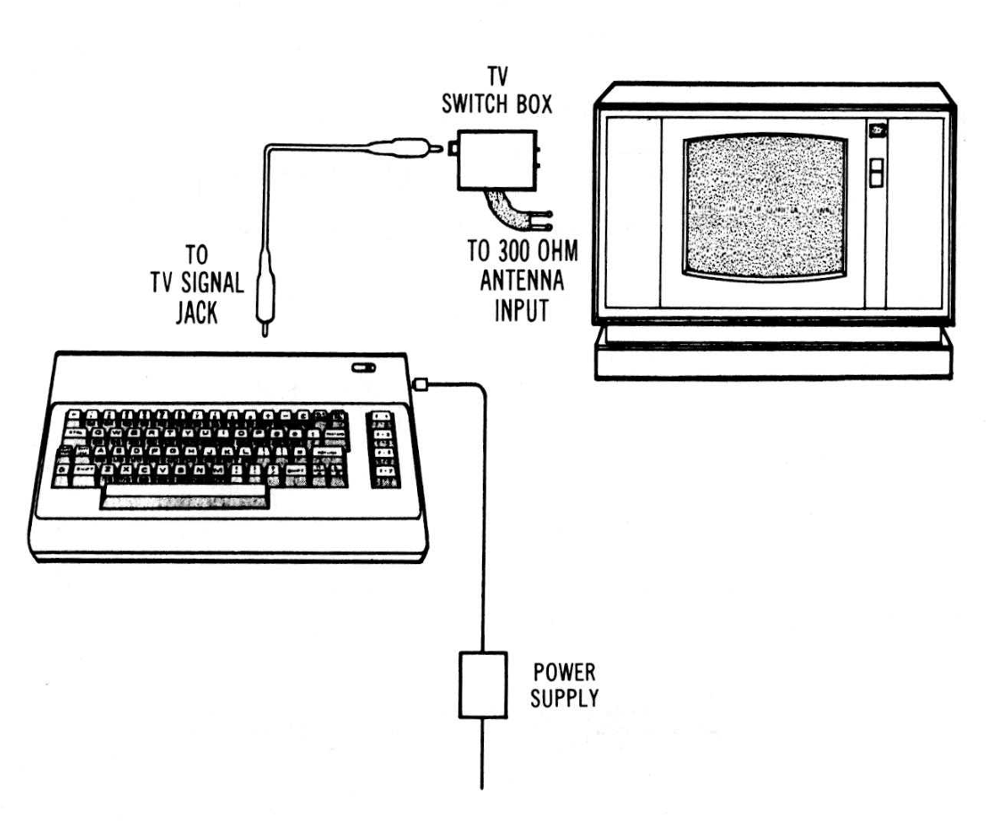
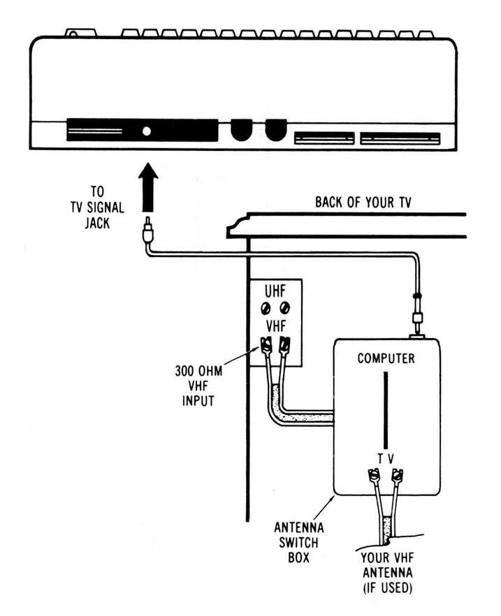
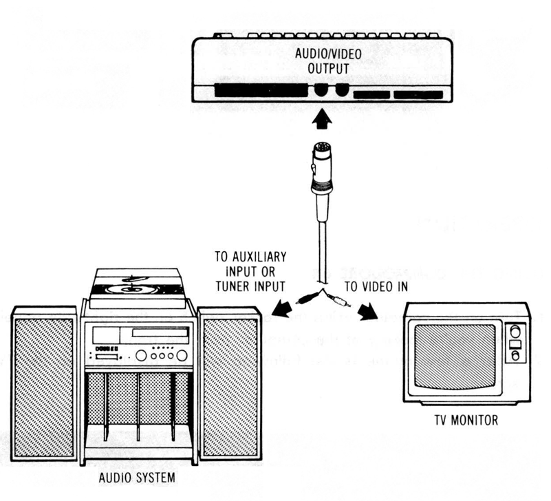

The following step-by-step instructions show you how to connect the Commodore 64 to your television set, sound system, or monitor and make sure everything is working properly.
Before attaching anything to the computer, check the contents of the Commodore 64 container. Besides this manual, you should find the following items:
If any items are missing check back with your dealer immediately for a replacement.
First, let's take a look at the arrangement of the various connections on the computer and how each functions.
Connect the computer to your TV as shown on page 4 of the manual.
The Commodore 64 is now correctly connected. No additional connections are required to use the computer with your TV. The antenna switchbox will connect the computer to the TV when the slide switch is in the "computer" position. When the switch is in the "TV" position your set will operate normally.
Since the Commodore 64 furnishes a channel of high fidelity sound, you may wish to play it through a quality amplifier to realize the best sound possible. In addition, the Commodore 64 also provides a standard "composite" video signal, which can be fed into a television monitor.
These options are made possible by the audio/video output jack on the rear panel of the Commodore 64. The easiest way to gain access to these signals is by using a standard 5-Pin DIN audio cable (not supplied). This cable connects directly to the audio/video connector on the computer. Two of the four pins on the opposite end of the cable contain the audio and video signals. Optionally, you can construct your own cable, using the pinouts shown in Appendix I as a guide.
Normally, the BLACK connector of the DIN cable supplies the AUDIO signal. This plug may be connected to the AUXILIARY input of an amplifier, or the AUDIO IN connector of a monitor or other video system, such as a video cassette recorder (VCR).
The WHITE or RED connector usually supplies the direct VIDEO signal. This plug is connected to the VIDEO IN connector of the monitor or video input section of some other video system, such as a VCR.
Depending on the manufacturer of your DIN cable, the color coding of the plugs may be different. Use the pinouts shown in Appendix I to match up the proper plugs if you don't get an audio or video signal using the suggested connections.
If you purchased peripheral equipment, such as a VIC 1541 disk drive or a VIC 1515 printer, you may wish to connect it at this time. Refer to the user's manuals supplied with any additional equipment for the proper procedure for connecting it to the computer.
**** COMMODORE 64 BASIC V2 ****
64K RAM SYSTEM 38911 BASIC BYTES FREE
READY.
▋If you don't get the expected results, recheck the cables and connections. The accompanying chart will help you isolate any problem.
| Symptom | Cause | Remedy |
|---|---|---|
| Indicator Light not "On" | Computer not "On" | Make sure power switch is in "On" position |
| Power cable not plugged in | Check power socket for loose or disconnected power cable. | |
| Power supply not plugged in | Check connection with wall outlet | |
| Bad fuse in computer | Take system to authorized dealer for replacement of fuse | |
| Picture without color | Poorly tuned TV | Retune TV |
| Picture with poor color | Bad color adjustment on TV | Adjust color/hue/brightness controls on TV |
| Sound with excess background noise | TV volume up high | Adjust volume of TV |
| Picture OK, but no sound | TV volume too low | Adjust volume of TV |
TIP:
The COMMODORE 64 was designed to be used by everyone. But we at Commodore recognize that computer users may, occasionally, run into difficulties. To help answer your questions and give you some fun programming ideas, Commodore has created several publications to help you. You might also find that it's a good idea to join a Commodore Users Club to help you meet some other COMMODORE 64 owners who can help you gain knowledge and experience.
The flashing square under READY is called the cursor and indicates where what you type on the keyboard will be displayed on the screen. As you type, the cursor will move ahead one space, as the original cursor position is replaced with the character you typed. Try typing on the keyboard and watch as characters you type are displayed on the TV screen.
There is a simple way to get a pattern of colors on the TV so you can easily adjust the set. Even though you may not be familiar with the operation of the computer right now, just follow along, and you'll see how easy it is to use the Commodore 64.
First, look on the left side of the keyboard and locate the key marked CTRL. This stands for ConTROL and is used, in conjunction with other keys, to instruct the computer to do a specific task.
To use a control function, you hold down the CTRL key while depressing a second key.
Try this: hold the CTRL key while also depressing the 9 key. Then release both keys. Nothing obvious should have happened, but if you touch any key now, the screen will show the character displayed in reverse type, rather than normal type—like the opening message or anything you typed earlier.
Hold down the SPACE BAR. What happens? If you did the above procedure correctly, you should see a light blue bar move across the screen and then move down to the next line as long as the SPACE BAR is depressed.
Now, hold CTRL while depressing any of the other number keys. Each of them has a color marked on the front. Anything displayed from this point will be in that color. For example, hold CTRL and the 8 key and release both. Now hold the SPACE BAR. Watch the display. The bar is now in yellow! In a like manner you can change the bar to any of the other colors indicated on the number keys by holding CTRL and the appropriate key.
Change the bar to a few more different colors and then adjust the color and tint controls on your TV so the display matches the colors you selected.
At this point everything is properly adjusted and working correctly. The following chapters will introduce you to the BASIC language. However, you can immediately start using some of the many prewritten applications and games available for the Commodore 64 without knowing anything about computer programming.
Each of these packages contains detailed information about how to use the program. It is suggested, though, that you read through the first few chapters of this manual to become more familiar with the basic operation of your new system.